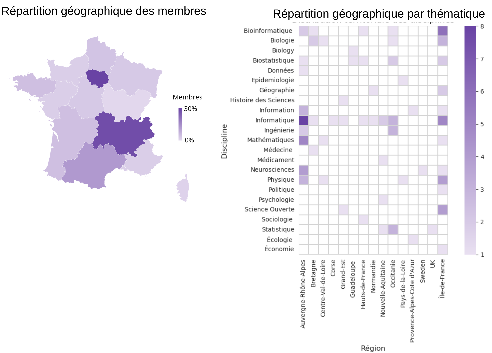

Communauté ↓
Cartographie des membres
Suite à l’envoi d’une enquête aux abonnés de la liste, l’analyse de la centaine de réponses reçues nous a permis d’établir les documents ci-dessous. L’ensemble des informations peut être consultés sur ce rapport.
Répartition géographique et thématique des Membres

Membres du réseau
Liste des scientifiques ayant exprimé un intérêt ou étant actifs autour des thématiques de la recherche reproductible.
Annecy
- Thomas Vuillaume — LAPP
Bobigny
- Maha Said — LVTS
- Raphaël Lévy — Laboratory for Vascular Translational Research (UMRS 1148)
Bordeaux
- Ludovic Courtès — Inria Bordeaux Sud-Ouest
- François Ric — Laboratoire de Psychologie UR 4139
- Nicolas P. Rougier — Institute of Neurodegenerative Diseases
- Frédéric Santos — UMR 5199 PACEA
- Loïc Paulevé — LaBRI
- Boris Hejblum — Bordeaux Population Health U1219
- Estelle Rascol — Chimie et Biologie des Membranes et Nano-objets UMR5248 UFR Sciences Pharmaceutiques Université de Bordeaux
- Solenne Roux — LabPsy Université de Bordeaux
Bron
- Claude Gronfier — Centre de recherche en neurosciences de Lyon (CRNL)
- Nicolas Roelandt — Département Aménagement Mobilités Environnement
- Yoann Lafon — Laboratoire de Biomécanique et Mécanique des Chocs, LBMC, UMR_T 9406
Chelles
- Nathanne Rost — LVTS
Clermont-Ferrand
- David Hill — LIMOS UMR CNRS 6158
Corte
- Paul-Antoine Bisgambiglia — UMR SPE
Dijon
- Aurélien Cottin — UMR Agroécologie - pôle Biome - équipe BioCom
Évry
- Sergiu Ivanov — IBISC
- Joan Hérisson — Génomique Métabolique
Gif-Sur-Yvette
- Miguel Colom — Centre Borelli
- Laurent Oudre — Centre Borelli
- Nicolas Vayatis — Centre Borelli
- Fabrice Leclerc — I2BC
- Jose-Armando Hernandez-Gonzalez — Centre Borelli
Grenoble
- Céline Acary-Robert — LJK / GRICAD
- Sacha Hodencq — Grenoble Electrical Engineering Laboratory (G2Elab)
- Hans Rocha Ijzerman — Laboratoire Inter-universitaire de Psychologie
- Arnaud Legrand — LIG
- Violaine Louvet — LJK - Laboratoire Jean Kuntzmann
- Franck Pérignon — LJK - Laboratoire Jean Kuntzmann
- Dominique Muller — Laboratoire Interuniversitaire de Psychologie
- Pierre-Antoine Bouttier — UAR GRICAD
- Olivier Richard — LIG
- Nelle Varoquaux — TIMC
- Amira Barhoumi — Laboratoire d'Informatique de Grenoble
- Lauranne Sarribouette — ISTerre Université Grenoble Alpes Université Grenoble Alpes
- Murielle Serlet — Centre Mersenne-Mathdoc CNRS CNRS
- Romain Caneill — IGE Université Grenoble Alpes Université Grenoble Alpes
Limoges
- Henri Massias — XLIM
Lyon
- Gaëlle Leroux — Centre de Recherche en Neurosciences de Lyon (CRNL)
- Mathurin Massias — LIP
- Ghislain Durif — Laboratoire de Biologie et Modélisation de la Cellule
- Alice Brenon — LIRIS
- Kim-An Nguyen —
- Arthur Batel — LIRIS
- Sabrina Granger — Software Heritage
- Fabien Chauveau — Centre de Recherche en Neurosciences de Lyon
- Guillaume Sescousse — Centre de Recherche en Neurosciences de Lyon (CRNL)
- Laurie Tonon — Centre de Recherche en Cancérologie de Lyon
- Linda Angulo Lopez — Direction des Relations Internationales INRAE
- Karine Delvert — Université Claude Bernard Lyon 1 Service commun de la documentation Université Claude Bernard Lyon 1
- Aurélie Siberchicot — Laboratoire de Biométrie et Biologie Évolutive Université Lyon 1
- Mattéo Camier — Pôle de Calcul École Centrale de Lyon
- Alain Marois — Chargé de formation et accompagnement de la recherche ENS de Lyon
- Emmanuelle Morlock — UMR 5189 HiSoMA EquipEx Biblissima CNRS
- Guy Genestoux — DISP - UR4570 INSA Lyon INSA Lyon
- Damien Gervasoni — Centre de Recherche en Neurosciences de Lyon CNRS
Marseille
- Franck Torre — IMBE
- Francine Filoche — Département ingénierie documentaire - SCD Université Aix Marseille Université Aix Marseille
Montpellier
- Aubin Thomas — Institut de Génétique Humaine
- Pierre-François Roux — Ontogenèse moléculaire
- Roselyne Vallo — Unité INSERM1058
- François-David Collin — IMAG/UMR5149
- Facundo Muñoz — UMR ASTRE
- Myriam Carrere — UMR MoISA
- Alexandre Dehne-Garcia — DipSO-ISDM Université de Montpellier
- Khalid Belkhir — ISEM
- Vincent Lefort — LIRMM
- Yannick Biard — CIRAD/DiscO
- Stéphanie Rialle — ART-Dev CNRS
- Jacques Dainat — MIVEGEC Institut de recherche pour le développement
- Antoine Claessens — LPHI Université de Montpellier
Nantes
- Benoît Seignovert — Osuna INSU CNRS
- Mathis Brier — INSERM UMR 1229 Regenerative Medicine and Skeleton Université de Nantes Université de Nantes
Nice
- Silvia Bottini — MDLab
Orléans
- Konrad Hinsen — Centre de Biophysique Moléculaire
- Christophe Hurlin — LEO
- Carine Lucas — Institut Denis Poisson
- Marc Le Bert — INEM UMR7355 CNRS
Orsay
- Sarah Cohen-Boulakia — Laboratoire Interdisciplinaire des Sciences du Numérique
- Nicolas Ferey — Laboratoire Interdisciplinaire des Sciences du Numérique
Palaiseau
- Julien Chiquet — UMR MIA Paris-Saclay
- Sylvain Soliman — Équipe LIFEWARE, Centre Inria Saclay
Paris
- Gloria Gonzalez Curto — Chargée de projet
- Johann Dreo — Computational Systems Biomedicine
- Frédéric Lemoine — Institut Pasteur
- Simon Tournier — Institut de Recherche Saint Louis, Inserm US53, CNRS 2030
- Isabelle Boutron — Centre de Recherche en Epidémiologie et Statistique (CRESS)
- Fay Betsou — CRBIP
- Etienne Kornobis — Biomics
- Yves Rozenholc — UR 7537 BioSTM 7537 BioSTM
- Tru Huynh — unité de bioinformatique structurale (Nilges)
- François-Xavier Lyonnet-Du-Moutier — CiTCoM
- Josselin Noirel — GBCM
- Benoist Laurent — Laboratoire de Biochimie Théorique
- Roberto Toro — Neuroanatomie appliquée et théorique
- Lydia Yahia-Cherif — ICM
- Laurent Jourdren — IBENS (ENS - CNRS UMR8197 - Inserm U1024)
- Aurélien Allard — Sciences, Normes, Démocratie (SND)
- Pierre Poulain — Institut Jacques Monod
- Thomas Denecker — CNRS
- Magali Hennion — Epigénétique et Destin Cellulaire
- Timothée Giraud — UAR 2414 RIATE
- Alexandre Hocquet — Archives Poincaré (UMR 7117)
- Philippe Hupé — Bioinformatics Core Facility
- Nicolas Servant — Plate-forme de bioinformatique
- Claire Vandiedonck — Université Paris Cité
- Élodie Perrodeau — CRESS équipe METHODS AP-HP
- Fanny Sebire — Centre de Ressources en Information Scientifique Institut Pasteur
- Anne-Laure Thomas Derepas — Institut des Systèmes Complexes de Paris Ile de France (ISC-PIF) CNRS
- Mathilde Bernier — Direction des Données Ouvertes de la Recherche DDOR-CNRS
- Arianna Caporali — Direction générale de la Recherche et de l'innovation Ministère de l'Enseignement supérieur et de la Recherche
- Étienne Kornobis — Biomics platform Institut Pasteur
- Elias Bouacida — Laboratoire d'économie Dyonisien Université Paris 8
- Dejan Skrelic — Saint-Gobain Recherche Paris - CNRS Insitut National du Patrimoine
- David Valls-Gabaud — LERMA - Observatoire de Paris CNRS
- Cayetano Santos — CIEMAT In2p3 CNRS
- Diego Antolinos Basso — Medialab Sciences Po
- Marin Dacos — Cellule science ouverte Ministère de l'Enseignement supérieur et de la Recherche
- Olivier Rouchon — DDOR CNRS
Rennes
- Benoit Combemale — Institut de Recherche en Informatique et Systèmes Aléatoires
- Camille Maumet — IRISA / Inria Rennes
- Florian Naudet — IRSET
- Pascal Irz —
- Emmanuelle Becker — IRISA
- Christophe Heligon — Institut de Génétique et Développement de Rennes (IGDR)
- Martin Amouzou —
Rouen
- Raphaëlle Krummeich — Laboratoire IDEES UMR6266
- Sébastien Rey-Coyrehourcq — Laboratoire IDEES UMR6266
Rungis
Saclay
- Andrew P. Davison — Institut des Neurosciences Paris-Saclay (NeuroPSI)
- Thomas Moreau — MIND
- Claire Toffano-Nioche — Institut de Biologie Intégrative de la Cellule CNRS
- Raphaël Royauté — Université Paris-Saclay INRAE AgroParisTech
- Andrew Davison — Institut des Neurosciences Paris-Saclay CNRS
Strasbourg
- Christophe Pouzat — Institut de Recherche Mathématique Avancée
- Emmanuel Medernach — IPHC
- Jérôme Pansanel — IPHC
Tarbes
- Olivier Pantalé — Laboratoire Génie de Production
Toulouse
- Marie-Josee Cros — Unité de Mathématiques et Informatique Appliquées
- Elise Maigné — MIAT - INRAé
- Pierre Neuvial — Institut de Mathématiques de Toulouse
- Marion Aguirrebengoa — CBI
- David Trémouilles — LAAS
- Valérie Orozco — Toulouse School of Economics (TSE-R)
- Clément Foucher — LAAS
- Élise Maigne — MIAT INRAE
- Olivier de Mouzon — UMR TSE-R Toulouse School of Economics INRAE
- Christophe Bontemps — UMR TSE-R Toulouse School of Economics INRAE
- Eric Casellas — MIAT INRAE
Villetaneuse
- Sébastien Li-Thiao-Té — LAGA
- Jaime Arias — Laboratoire d'Informatique de Paris Nord CNRS
- Étienne André — Laboratoire d'Informatique de Paris Nord Université Sorbonne
Villeurbanne
- Sorina Pop — CREATIS
- Aurelie Siberchicot — Laboratoire de Biométrie et Biologie Evolutive
- Stephane Dray — Laboratoire de Biométrie et Biologie Evolutive